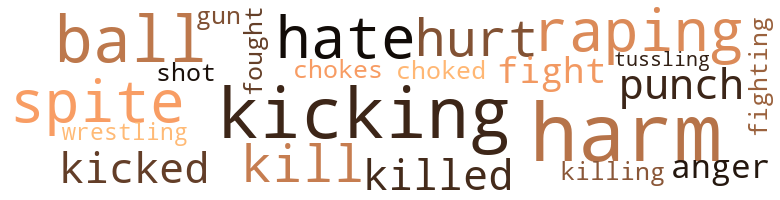

Music terms in the text
66 music-related terms matched in this text.
Most frequent terms in this topic: piano (22); music (12); dance (5); kicking (4); singing (4)

clarinet.n.01
Definition: a single-reed instrument with a straight tube
| word |
sentence |
| clarinet |
He played the piano as well as the saxaphone , clarinet , drums , and there were times when he could play the hell out of a harp . |
dance.n.01
Definition: an artistic form of nonverbal communication
| word |
sentence |
| dance |
" Come , darling , let 's dance , " Eddie said , sticking his tongue out at Louie . |
| dance |
" Now , Andy , " Eddie said , " come , let 's dance . |
| dance |
" Come , " he said , " let 's dance . " |
| dance |
" Let 's dance , sailor , " George said , eyeing his fly . |
| dance |
I met Theodore last Thanksgiving at the dance , did n't I Theodore ? " |
dance.v.02
Definition: move in a pattern; usually to musical accompaniment; do or perform a dance
| word |
sentence |
| dancing |
Every - one was dancing except Paul , who played the piano , and Timothy and Louie , who helped with the food and whiskey . |
dance.v.03
Definition: skip, leap, or move up and down or sideways
| word |
sentence |
| dancing |
" Ted Harris , " Eddie asked , while dancing with a sailor , " is it up ? " |
| danced |
The atmosphere was pleasing and everyone drank , smoked , and danced with their souls . |
jive.v.01
Definition: dance to jive music; dance the jive
| word |
sentence |
| Jiving |
Anyway , Louie , " she said , " if your own mother was Jiving I am positive that she would want the best for you . " |
kick.v.04
Definition: kick a leg up
| word |
sentence |
| kicking |
" You old worn-out bitch , " Lita said , kicking on the door , " I 'll catch your old dried-up ass tomorrow . " |
| kicking |
After fluffing the pillow , she flopped into the rocker and , kicking her shoes off , took a deep breath and said , " Now , that 's better . |
| kicking |
" Good morning , Mrs. Bandi , " said Susie , kicking the door . |
| kicking |
" I am telling you , Dorothy , " Nora said , sitting down and kicking her shoes off , " these steps of yours is just too much for us old folks to climb . " |
music.n.01
Definition: an artistic form of auditory communication incorporating instrumental or vocal tones in a structured and continuous manner
| word |
sentence |
| music |
" I was thinking about the music I heard at the movie . " |
| music |
Then , too , I 've been quite busy with my music and really , " Louie said , making feminine gestures as if he was rehearsing , " well , really , Verna , " he went on , " I just forgot . " |
| music |
The music was perfect for the occasion . |
| music |
The lights were still low and the music was soft , but the party got livelier than before . |
| music |
Dim light , soft music , lots of whiskey , and a house full of hungry men . " |
| music |
There 'll be music and cuss words I 've never heard in all of my bom days . " |
| music |
Then she said , " Come , Bessie , make with the music . " |
| music |
If you want music I 'll put some records on . " |
| music |
" Paul , " Susie said , with a tumbler full of corn liquor in one hand and the other on her hip , " come here , honey , and make music with this piano until Steve gets here . " |
| music |
I can hear the music . " |
| music |
The music was soft and yet loud . |
| music |
" After I am well advanced in music , " he said to himself , " I think that I 'll go in for painting . " |
piano.n.01
Definition: a keyboard instrument that is played by depressing keys that cause hammers to strike tuned strings and produce sounds
| word |
sentence |
| piano |
He played the piano as well as the saxaphone , clarinet , drums , and there were times when he could play the hell out of a harp . |
| piano |
Blushing , Tom asked , " Do you play the piano , Louie ? " |
| piano |
Louie seated himself at the piano with great ease , and as he struck the first note there was complete silence . |
| piano |
Eddie sat on the floor near the piano . |
| piano |
" There 's nothing wrong with what you 've got , " Tom said , watching Louie at the piano . |
| piano |
Louie stood up at the piano . |
| piano |
Although Louie had no voice or piano traihing , his voice alone created quite a stir . |
| piano |
Still sitting at the piano , Louie smiled and said , " Very well , but remember now - this is the last one . " |
| piano |
Jack got up from the floor and sat beside Louie at the piano . |
| piano |
" Thank you one and all , " Louie said , getting up from the piano . |
| piano |
" You 're not , Jack , " Louie said , getting up from his lap and sitting on the stool at the piano . |
| piano |
" Let 's get the hell out of here , " he said to Louie as he was leaving the piano . |
| piano |
" You play the piano Louie ? " |
| piano |
" You 're no good at the piano any - way unless you 're high , and you 're far far away from that . " |
| piano |
" Paul , " Susie said , with a tumbler full of corn liquor in one hand and the other on her hip , " come here , honey , and make music with this piano until Steve gets here . " |
| piano |
Patting her on her behind , he sat down at the piano , winked at her and said , " Will you take care of me later ? " |
| piano |
" Play the damn piano , man , and let 's see what will happen later , " Susie said , placing her glass carefully on top of the piano . |
| piano |
" Play the damn piano , man , and let 's see what will happen later , " Susie said , placing her glass carefully on top of the piano . |
| piano |
Every - one was dancing except Paul , who played the piano , and Timothy and Louie , who helped with the food and whiskey . |
| piano |
" Okay , kids , give me time to catch up and I 'll do a strip , " Verna said , going toward the piano where Paul sat playing . |
| piano |
" Good God , Louie , " Verna said , powdering her face , " you 've been at that piano for four hours . |
| piano |
After playing for an hour more , Louie got up from the piano and took a shower and fell across the bed , nude . |
pipe.n.04
Definition: a tubular wind instrument
| word |
sentence |
| pipe |
This old body of mine is fulla pain , " Nora said , smoking her pipe . |
| pipe |
Nora choked on her pipe . |
sing.v.02
Definition: produce tones with the voice
| word |
sentence |
| sang |
After singing in English , he sang in Spanish . |
| sang |
Everyone was pleased as Louie played and sang " Oh , Danny Boy , " first in English , and then in Spanish . |
| sang |
" Goodbye , I hate to see you go , but have a good time , " Louie sang as he played . |
| sing |
Finding herself being ignored , Mrs. Bandi started sing - ing , " I sing because I am happy , I sing because I am free , for His eye is on the sparrow and I know He watches me . " |
| sing |
Finding herself being ignored , Mrs. Bandi started sing - ing , " I sing because I am happy , I sing because I am free , for His eye is on the sparrow and I know He watches me . " |
| sing |
Finding herself being ignored , Mrs. Bandi started sing - ing , " I sing because I am happy , I sing because I am free , for His eye is on the sparrow and I know He watches me . " |
singing.n.01
Definition: the act of singing vocal music
| word |
sentence |
| singing |
Mrs. Bandi started singing , " Sweet Hour of Prayer , Sweet Hour of Prayer , Sweet Hour of Prayer . " |
| singing |
Mrs. Bandi looked up from her sewing and , seeing Bessie standing in her doorway , cleared her throat and started singing , " Come By Here Good Lord , Come By Here . " |
| singing |
After singing in English , he sang in Spanish . |
| singing |
Mrs. Bandi broke her smile and started singing , " Jesus keeps me near the cross . " |
song.n.01
Definition: a short musical composition with words
| word |
sentence |
| Song |
" Without a Song , " he s | ng , with his fingers moving across the ivories as if they were made to his order . |
| song |
At the end of his song he opened his eyes and , seeing daybreak , he smiled and said , " Well kids , that 's it , I guess . " |
| songs |
" Now , if you 'll excuse me , I 'll play two songs , and whenever you hear them I want you to think of me and this party . |
| song |
By the time Louie got to the end of the song , everyone was undressed . |
| song |
By the time he got back the song was over . |
whistle.v.01
Definition: make whistling sounds
| word |
sentence |
| whistled |
Two sailors passed and whistled . |
Violence terms in the text
56 violence-related terms matched in this text.
Most frequent terms in this topic: harm (8); kicking (5); hate (4); raping (4); ball (4)

anger.n.01
Definition: a strong emotion; a feeling that is oriented toward some real or supposed grievance
| word |
sentence |
| anger |
Full of anger , Timothy gave him a paralyzing slap in the face . |
| anger |
" You old piss , " Bessie yelled in anger . |
fight.n.05
Definition: a boxing or wrestling match
| word |
sentence |
| fight |
" I got into a fight and my nose bled . |
| fight |
" I guess your ice man forgot your ice , or did he have a fight with his delivery boy ? " |
fight.v.02
Definition: fight against or resist strongly
| word |
sentence |
| fought |
" The night before that some colored woman and a man fought like dogs in the hall . |
| fighting |
The night before that two men were fighting over another man and called each other names I never heard before . " |
gag.v.06
Definition: cause to retch or choke
| word |
sentence |
| choked |
Nora choked on her pipe . |
| chokes |
" I hope it chokes you , " Bessie said , handing her a tumbler half-full of vodka . |
gun.n.01
Definition: a weapon that discharges a missile at high velocity (especially from a metal tube or barrel)
| word |
sentence |
| gun |
" He unloaded his gun and left , " Verna said , smiling and holding up two ten-dollar bills . |
harm.v.01
Definition: cause or do harm to
| word |
sentence |
| harm |
She talked about everyone and said nothing to harm anyone . |
hate.v.01
Definition: dislike intensely; feel antipathy or aversion towards
| word |
sentence |
| hate |
" Now promise me that you wo n't hate me for telling you and please do n't cry , because if you do I 'll kill myself for not telling you before now . " |
| hate |
" Goodbye , I hate to see you go , but have a good time , " Louie sang as he played . |
| hate |
" I hate liquor , " replied Airs . |
| hate |
I hate vodka , too . " |
injury.n.01
Definition: any physical damage to the body caused by violence or accident or fracture etc.
| word |
sentence |
| harm |
I do n't wish you any harm but , huh , I just ca n't see what any decent man would want with a woman like you anyway . |
| harm |
" I did n't mean any harm , Bessie , " Mrs. Bandi said , rocking . |
| harm |
" Like hell you did n't mean any harm , " Bessie said , going inside . |
| harm |
" Woman , every time you show your face it 's harm , " she said as she slammed the door . |
| harm |
" Huh , " Mrs. Bandi said , " just the same , I do n't see any harm in asking . |
| harm |
" I 'm sorry , Louie , " Timothy said sadly , " I mean no harm . |
| harm |
" I do n't mean any harm . " |
kick.v.04
Definition: kick a leg up
| word |
sentence |
| kicking |
" You old worn-out bitch , " Lita said , kicking on the door , " I 'll catch your old dried-up ass tomorrow . " |
| kicking |
After fluffing the pillow , she flopped into the rocker and , kicking her shoes off , took a deep breath and said , " Now , that 's better . |
| kicking |
" Good morning , Mrs. Bandi , " said Susie , kicking the door . |
| kicking |
" I am telling you , Dorothy , " Nora said , sitting down and kicking her shoes off , " these steps of yours is just too much for us old folks to climb . " |
kick_back.v.02
Definition: spring back, as from a forceful thrust
| word |
sentence |
| kicked |
Louie got frantic as he tore the towel from around his waist , kicked the spread to the floor , and began scratching Paul 's body . |
| kicked |
Lying across the bed , Timothy kicked his loafers off and started looking through Louie 's address book . |
| kicking |
Lita sighed , dropping herself on Bessie 's studio couch and kicking off her shoes . |
| Kicking |
Kicking off her shoes she took several swallows of beer and said , " Hell , let the good times roll . |
kill.v.10
Definition: cause the death of, without intention
| word |
sentence |
| kill |
" Now promise me that you wo n't hate me for telling you and please do n't cry , because if you do I 'll kill myself for not telling you before now . " |
| killed |
" Yes , he was living with a German man and the fellow caught him in bed with another man and nearly killed him . |
| killed |
" Do you mean to tell me , Dorothy , that he was crying after he nearly killed the boy ? " |
| kill |
" I can kill you ! " he yelled . |
killing.n.01
Definition: an event that causes someone to die
| word |
sentence |
| killing |
There is no need killing yourself . " |
killing.n.02
Definition: the act of terminating a life
| word |
sentence |
| kill |
" Good God , Eddie , why kill yourself ? " |
malice.n.01
Definition: feeling a need to see others suffer
| word |
sentence |
| spite |
Louie ran up the hall with his arms full of packages , and in spite of the hot , sticky day he looked as fresh as ever . |
| spite |
In spite of the good and decent people there are a lot of strange ones down there . |
| spite |
Bessie left her husband , and as strange as it seems , she has done quite well in bringing up a fine young man , in spite of all of her filth . " |
| spite |
She was most sweet and friendly , but in spite of her friendliness , most of the tenants resented her . |
musket_ball.n.01
Definition: a solid projectile that is shot by a musket
| word |
sentence |
| ball |
" I do n't know about any other time , " he said , smiling and taking Louie by the hand , " but if the in-between fits Eddie , the two of you can have a ball . " |
| balls |
Last night some Jewish woman caught a colored fellow she was living with in bed with another woman , and almost cut his balls off . " |
| ball |
I see you 're on the ball . " |
| ball |
As soon as the ball begins to roll we 'll have to get rid of Timothy and Louie . " |
| ball |
Taking his clothes off , Louie looked at Pete lying across the bed and said , " You 've got more on the ball than I thought you had . " |
pain.v.02
Definition: cause emotional anguish or make miserable
| word |
sentence |
| hurt |
I like him too much to hurt him . |
| hurt |
" Please do n't hurt me , Louie , " he asked , " please do n't . " |
| hurt |
" If you 're good to me , Jack , I wo n't hurt you , " Louie said . |
punch.n.01
Definition: (boxing) a blow with the fist
| word |
sentence |
| punch |
" I love it , Eddie , " Louie said , sipping strong punch from a glass . |
| punch |
" That 's true , " Eddie said , pouring himself a glass of punch , " but you 're younger and quite easy on the eyes . " |
rape.v.01
Definition: force (someone) to have sex against their will
| word |
sentence |
| raping |
Old men raping young girls , young boys raping old women , fathers raping daughters , sons raping their stepmothers , and God knows what else . " |
| raping |
Old men raping young girls , young boys raping old women , fathers raping daughters , sons raping their stepmothers , and God knows what else . " |
| raping |
Old men raping young girls , young boys raping old women , fathers raping daughters , sons raping their stepmothers , and God knows what else . " |
| raping |
Old men raping young girls , young boys raping old women , fathers raping daughters , sons raping their stepmothers , and God knows what else . " |
scuffle.v.02
Definition: fight or struggle in a confused way at close quarters
| word |
sentence |
| tussling |
" After all , Tim , " he said , smiling , " we mus n't leave any tussling ideas . " |
shoot.v.02
Definition: kill by firing a missile
| word |
sentence |
| shot |
" Who shot my aunt ? " |
wrestle.v.01
Definition: combat to overcome an opposing tendency or force
| word |
sentence |
| wrestling |
Grabbing Louie by the shoulder , they began wrestling . |
Religion terms in the text
53 religion-related terms matched in this text.
Most frequent terms in this topic: God (8); church (7); preacher (5); pastor (5); prayer (4)
church.n.02
Definition: a place for public (especially Christian) worship
| word |
sentence |
| church |
" When that gal first came here she was good and honest and decent and went to church every Sunday . " |
| church |
" I guess I 'll fix myself some breakfast before going to church . " |
| church |
Standing in front of the church , Sally said , " Now listen , Ethel , I am only waiting for ten minutes and after that I am going . " |
| church |
" Please , Sally , do n't leave until I get back , " Ethel said pleadingly , and went inside the church . |
| church |
" I wonder what she is going inside the church for . " |
church.n.04
Definition: the body of people who attend or belong to a particular local church
| word |
sentence |
| church |
" Well , Nora , " Mrs. Bandi said , rocking , " I missed you at church Sunday . " |
| church |
" I 'll see you Sunday morning at church , " she said and left . |
creed.n.01
Definition: any system of principles or beliefs
| word |
sentence |
| creeds |
" Not only that , Louie , " Eddie answered , " but you 'll find all types , colors , races , and creeds . |
| creeds |
She had friends of all races , colors and creeds . |
curate.n.01
Definition: a person authorized to conduct religious worship
| word |
sentence |
| pastor |
They are always in the pastor 's study shaking his hand . " |
| pastor |
" Huh , " Mrs. Bandi said , peeking inside , " they shake the pastor 's hand because he is young and is not married . |
| pastors |
I never see them shaking the hands of the old pastors . |
| pastor |
Huh , you can say what you want , Agnes , but while they are shaking the pastor 's hand , they are also shaking their little breasts . " |
| pastor |
" Just the same , Dorothy , " Agnes said , " the pastor preached a very good sermon today . " |
| pastor |
" Did n't our pastor give a wonderful sermon this morning ? " |
eden.n.01
Definition: any place of complete bliss and delight and peace
| word |
sentence |
| heavens |
" Good heavens no , Mrs. Bandi , " Louie answered . |
| Heaven |
" Dear God , let it be with you in Heaven . " |
| Heaven |
If this is Heaven , honey , then let me be , " George said , rubbing the sailor 's fly . |
| heaven |
" The kitchen and bath are the last word and the bedroom is heaven . " |
| heaven |
" With you , Jack , this is Paris , Rome , and heaven , too . " |
god.n.03
Definition: a man of such superior qualities that he seems like a deity to other people
| word |
sentence |
| God |
" How on God 's earth can any one woman as young and as beautiful as Bessie be filled with so much of the devil itself . " |
| God |
Perhaps one of these days when you grow up you 'll be able to find your people , with God 's help , " Verna said . |
| God |
" Maria , may God bless both of them , " Verna said , ' going into her bedroom . |
| God |
" No , she was n't , Louie , " Verna said , " and may God strike me dead if I 'm lying . |
| God |
" How on God 's earth can you prove such nonsense ? " she asked . |
| God |
Cussing , having men , giving parties and God knows what else you give . |
| God |
Old men raping young girls , young boys raping old women , fathers raping daughters , sons raping their stepmothers , and God knows what else . " |
| God |
" Good God Almighty , " one sailor yelled , " some party indeed . |
godhead.n.01
Definition: terms referring to the Judeo-Christian God
| word |
sentence |
| Almighty |
" Good God Almighty , " one sailor yelled , " some party indeed . |
hell.n.01
Definition: any place of pain and turmoil
| word |
sentence |
| hell |
" No , get to hell away from my door before I call the cops . " |
jew.n.01
Definition: a person belonging to the worldwide group claiming descent from Jacob (or converted to it) and connected by cultural or religious ties
| word |
sentence |
| Jew |
" Uh-huh , first a Jew and now a yellow nigger . |
| Jew |
" Well , you see , " Monique went on after several gulps , " I met this Jew at a bar . |
| Jew |
He never told me he was a Jew but I knew he was . |
prayer.n.01
Definition: the act of communicating with a deity (especially as a petition or in adoration or contrition or thanksgiving)
| word |
sentence |
| Prayer |
Mrs. Bandi started singing , " Sweet Hour of Prayer , Sweet Hour of Prayer , Sweet Hour of Prayer . " |
| Prayer |
Mrs. Bandi started singing , " Sweet Hour of Prayer , Sweet Hour of Prayer , Sweet Hour of Prayer . " |
| Prayer |
Mrs. Bandi started singing , " Sweet Hour of Prayer , Sweet Hour of Prayer , Sweet Hour of Prayer . " |
| prayer |
" Why , week ' fore last I come home from prayer meetin ' and Virginia and Anna was in my house with mens . " |
| prayer |
After Louie went inside Mrs. Bandi threw both hands into the air , and after a few minutes of silent prayer took them down and , bowing her head , said , " Thank you Jesus . " |
| prayer |
I have a few stops to make before going home , and I am going to prayer meeting tonight . " |
| prayer |
After a few minutes of silent prayer , he began praying aloud . |
preacher.n.01
Definition: someone whose occupation is preaching the gospel
| word |
sentence |
| preacher |
" Did you call the preacher , Nora ? " |
| preacher |
In a very strong voice she repeated , " Get out , you lousy rascal , " she said , pointing directly at the preacher . |
| preacher |
The doctor was there , and also the preacher . |
| preacher |
The preacher started praying for her and she chased all of us out , including the preacher . " |
| preacher |
The preacher started praying for her and she chased all of us out , including the preacher . " |
religion.n.01
Definition: a strong belief in a supernatural power or powers that control human destiny
| word |
sentence |
| religion |
" Dat gal makes me so mad sometimes I think I ' se gon na lose my religion . |
saint.n.02
Definition: person of exceptional holiness
| word |
sentence |
| angel |
Everyone thought of her as an angel . |
| angel |
Timothy is no angel and besides , every time he sees Louie his pecker stands up . |
satan.n.01
Definition: (Judeo-Christian and Islamic religions) chief spirit of evil and adversary of God; tempter of mankind; master of Hell
| word |
sentence |
| devil |
" How on God 's earth can any one woman as young and as beautiful as Bessie be filled with so much of the devil itself . " |
| devil |
" Huh , the devil 's got Bessie all right . " |
sermon.n.02
Definition: a moralistic rebuke
| word |
sentence |
| sermon |
" Just the same , Dorothy , " Agnes said , " the pastor preached a very good sermon today . " |
| sermon |
" Did n't our pastor give a wonderful sermon this morning ? " |
| sermon |
Yes , Sister Pearl , he gave us a wonderful sermon indeed . " |